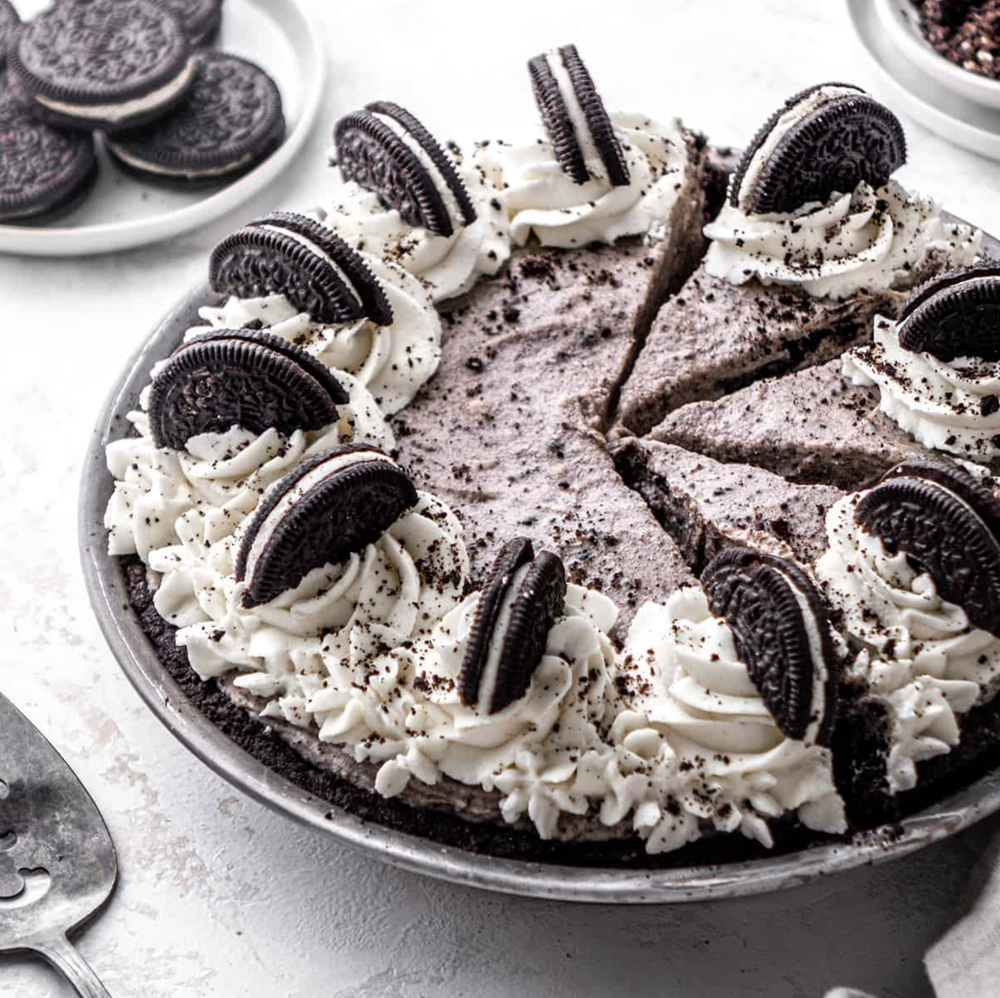

Oreo Pie Recipe
Jump to Recipe

Backround
I do not have a picture of this recipe, but here is the website I found it on.
When it comes to thanksgiving, my immediate family is not usually doing much cooking, as it's not ever hosted at our own house. However, we of course always manage to bring a few dishes. When we have thanksgiving with my moms big family,we usually only prepare 1-2 things, most years it will end up being this oreo pie. My cousin tj once said This is the best dessert i've ever had.
Not only is this pie insanely easy to make, but it's probably one of the best tasting desserts ever. We always just whip this up the day before if there's nothing else that comes to mind, but at the end of dinner, not a single piece will be left (it's just that good).
Tips
- freeze the pie if you are planning on waiting 3+ hours to eat
- If your not much of a double stuffed oreo guy (or girl) you can use Trader Joe's JoJo's, or regular oreos.
- I highly recomend added homeade or store bought whipped cream on top
Recipe
| Oreo Crust |
| Indgredients |
| Double Stuffed Oreo
Cookies |
22 |
| Granulated Sugar |
2 tbsp |
| Salted Butter (melted) |
4 tbsp |
| Intructions |
| step 1 |
Preheat oven to 350 degrees
F |
| step 2 |
Crush up oreos into fine
crumbs |
| step 3 |
In a large bowl, combine Oreo
crumbs, sugar and butter |
| step 4 |
Press into a 9"inch round pie
dish and bake for 8 minutes untill slightly puffed |
| step 5 |
Remove from oven and cool
completely |
| Oreo Filling |
| Ingredients |
| Double Stuffed Oreo
Cookies |
18 |
| Cream Cheese (softened) |
8 oz |
| Powdered Sugar |
1.5 cups |
| Salted Butter (softened) |
1/4 cup |
| Heavy Whipping Cream |
2 cups |
| Pure Vanilla Extract |
2 tsp |
| Fine Sea Salt |
1/4 tsp |
| Intructions |
| step 1 |
Place 10 cookies on cutting
board and cut into 1/4 pieces, set aside. |
| step 2 |
Crush up the remaining 8 oreos
into fine crumbs, set aside. |
| step 3 |
In the bowl of a standing
mixer or with a hand-held mixer beat whipping cream,
vanilla and powdered sugar until stiff peaks form. Set
aside. |
| step 4 |
In the bowl of a standing
mixer or with a hand-held mixer, cream together butter,
cream cheese and sea salt. Beat until well combined &
smooth (about 30-60 seconds) |
| step 5 |
Fold in whipped cream until
mixture is smooth. |
| step 6 |
Stir in Oreos |
| Assembly |
| step 1 |
Evenly spread the Oreo filling
into the baked cooled pie crust. |
| step 2 |
*optional* Add whipped cream
and extra oreos to top. |
| step 3 |
Chill for at least 3 hours
before serving. |
| step 4 |
Serve and Enjoy! |